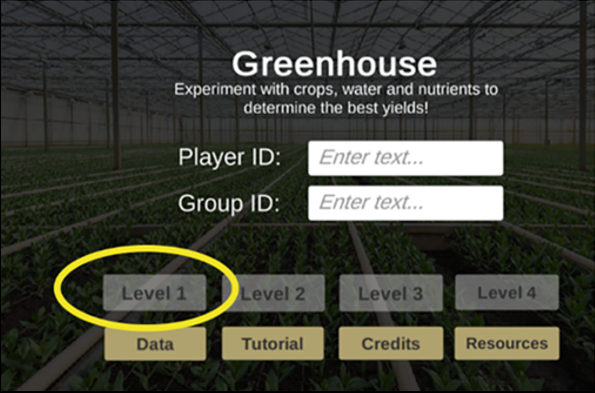

Using Graphs to Grow the Best Crops
Contributors: Shonda Kuiper, Anna Olsen, Ginger Rowell, DASIL, Shreyas Agrawal' 24
Contributors: Shonda Kuiper, Anna Olsen, Ginger Rowell, DASIL, Shreyas Agrawal' 24
Figure 1: Settings to start Greenhouse Game for Part 1
Figure 2: Settings to generate data for Part 1

Develop a strategy to optimize your profit when growing corn in Level 1 of the Greenhouse game. Use your statistical knowledge and any analyses you choose to address the following steps:
After playing one season, submit your Player ID, Income, Expenses, and Profits to your instructor. Compare your profits with those of your fellow students by entering your new Group ID below. Sometimes it can take up to 60 minutes for your class data to show in the app below.
Evaluating a linear model: Use Settings A in Greenhouse App1
Evaluating class data: Use Settings B in the Greenhouse App1
Dataspace is supported by the Grinnell College Innovation Fund and was developed by Grinnell College faculty and students. Partial support provided by the Transforming Undergraduate Education in Science (TUES) program at the National Science Foundation under DUE#0510392, DUE #1043814, and DUE #1712475. Copyright © 2021. All rights reserved
This page was last updated on 5 August 2022.